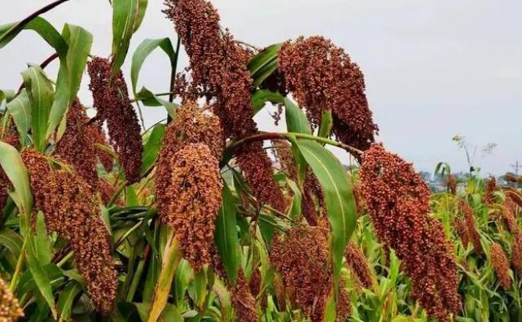

高粱分明也是一种粮食，为什么现在很少有人种植高粱了？
除了酿酒之外，现在人几乎很少能够接触到高粱，而在几十年前，几乎整个北方多多少少都种植着高粱，从河南到东北，高粱也算是一种十分常见的农作物，也是当时的主粮之一。
不过在今天，除了少数地区之外，高粱已经非常少见了，其实这也是没办法的事情，因为以前的人种植高粱就是迫于无奈，现在有了更好的选择，高粱这玩意儿自然就被淘汰了。

高粱在国内种植的历史十分悠久，虽然目前绝大多数野生高粱资源都在非洲，但是国内种植高粱就考古来看，甚至能够追溯到商周时期，远及辽东一带。
只不过，相较于小麦、粟米、水稻等农作物，高粱从古至今都是那种一小片一小片种植的农作物，传统的五谷当中，也就没有高粱的一席之地。
在明清以前，高粱只能算是区域性的粮食作物，明清之后才急速兴旺起来。
明清时期的北方地区，因为人口的猛烈增加，传统轮作制度之下，那些小麦之类的粮食作物并不容易生长，反倒是高粱异军突起，成为了一匹黑马。
清朝中后期，国内的人口已达到数亿之多，但这个时候国内的耕地，能开发的基本上已经开发的差不多了，人均耕地数量越来越少。
而高粱这玩意儿，耐盐碱又耐干旱，在很多土质不好的地方也能够生长，即便高粱的产量远不如小麦等粮食作物，但那个年代，可以说就是一种救命粮。
从晚清开始，高粱就成为了一种广泛种植的主粮作物，持续到了上世纪后期。
可此一时彼一时，上世纪晚期国内经济高速发展的同时，高粱的种植规模却急速下降，北方大多数的地区，种植高粱的地方越来越少，当年的救命粮如今却陷入了尴尬当中。
本站文章均来自互联网，仅供学习参考，如有侵犯您的版权，请邮箱联系我们删除！
 上一篇
上一篇